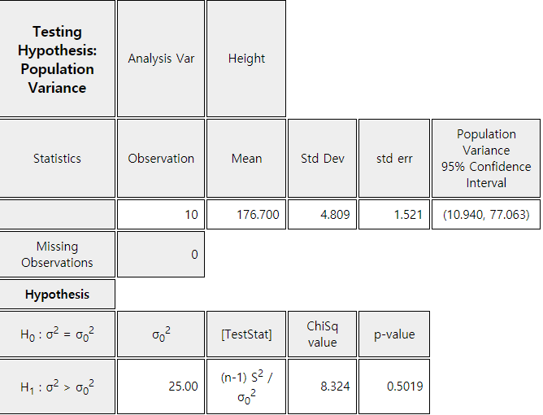

Examples for testing hypothesis of a population variance are as follows.
- Bolts produced by a company are currently supplied to an automaker and have an average diameter of 7mm and a variance of 0.25mm. Recently, a rival company has applied for the supply, claiming that their company's bolts have the same average diameter of 7 mm but a variance of 0.16mm. How can I find out if this claim is true?
- The variance of scores in mathematics on the last year's college scholastic aptitude test was 100.
This year's questions in mathematics test are said to be much easier than last year's. How can I test whether the variance of the mathematics score in this year is smaller than the last year?
If you understand the testing hypothesis for the population mean, the testing hypothesis
for the population variance differs only from the sampling distribution and the test statistic,
but the basic concept is the same. In Chapter 6, we studied that the distribution of all possible
sample variances multiplied by a constant, \(\frac{(n-1)S^2}{\sigma^2}\), follows a chi-square
distribution with \(n-1\) degrees of freedom when the population is a normal distribution
with variance \(\sigma^2\). Using this theory, testing hypothesis for the population variance
can be done as follows.
Table 7.2.1 Testing hypothesis of the population variance
- the population is normally distributed -
If \( \frac{(n-1)S^2}{\sigma^2} > \chi^2_{n-1: α/2} \) or \( \frac{(n-1)S^2}{\sigma^2} < \chi^2_{n-1: 1-α/2} \) then reject \( H_0 \), else accept \( H_0 \)
Note: The \(\small H_0\) of 1) can be written as \(\small \; H_0 : \sigma^{2} \le \sigma^{2}_0 \) , 2) as \(\small \; H_0 : \sigma^{2} \ge \sigma^{2}_0 \)
Example 7.2.1
One company produces bolts for an automobile. If the average diameter of bolts is 15mm and
its variance is less than or equal to \(0.1^2\), it can be delivered to the automobile company.
Twenty-five of the most recent products were randomly sampled and their variance was \(0.15^2\).
Assuming that the diameter of a bolt follows a normal distribution,
1) Conduct testing hypothesis at the 5% significance level to determine if the product can be delivered to the automotive company.
2) Check the result using 『eStatU』
Answer
1) The hypothesis of this problem is \(\small H_0 : \sigma^{2} \le 0.1^{2} , H_1 : \sigma^{2} > 0.1^{2} \)
and its decision rule is as follows.
Note that \(\small s^2 = 0.15^2 = 0.0225 , \frac {(25-1)×0.15^2}{0.1^2} = 54 \) and \(\small \chi^2_{25-1: 0.05} = \chi^2_{24: 0.05} = 36.42 \).
Therefore, \(\small H_0\) is rejected.
2) Select [Testing Hypothesis \(\sigma^2\)] in 『eStatU』. Enter \(\sigma^2_{0} = 0.1^2 = 0.01\),
select the right sided test and the 5% significance level as <Figure 7.2.1> in the input box.
Then enter the sample size \(n\) = 25 and sample variance \(\small s^2 = 0.15^2 = 0.0225\).
[]
Hypothesis
Ho : σ 2 = σo2( > 0)
Test Type
χ2-test
Significance Levelα =
(0 < α < 1)
Sample Data
(input either sample data or sample statistics using csv / bsv)
test the hypothesis whether the population variance is greater than 25 at the significance level of 5%.
Answer
After entering data as shown in <Figure 7.2.3> on the sheet in 『eStat』 , click the icon of
testing hypothesis for variance and select ‘Height’ as the Analysis Var to display a dot graph
of data with (average) ± (standard deviation) interval as in<Figure 7.2.4>.
<Figure 7.2.3> 『eStat』 data input
<Figure 7.2.4> Dot graph and (Mean) ± (Std Dev) for Testing hypothesis of \(σ^2 \)
In the option box under the Graph Area (<Figure 7.2.5>), enter \(\sigma^2_{0}\) = 25,
and select the alternative hypothesis as right-sided test, significance level as 5%.
By clicking [\(\chi^2\) test] button, the result of the testing hypothesis will be shown
as <Figure 7.2.6> and the result table as <Figure 7.2.7>.
<Figure 7.2.5> Option menu for testing hypothesis for \(\sigma^2\)
<Figure 7.2.6> Testing hypothesis for \(\sigma^2\)

<Figure 7.2.7> Testing hypothesis for \(\sigma^2\)
It is necessary to assume that the population is normally distributed to test the hypothesis
of the population variance. Testing whether the population is normally distributed using
sample data is called a goodness of fit test which will be discussed in Chapter 11.
You may test the normality approximately by using a histogram with a normal distribution
which can be drawn from the option box in <Figure 7.2.5>. In addition, [Normal Q-Q Plot]
can be used to test the normality.
Practice 7.2.1
If the variance of the diameter of a metal washer product is less than \(0.05^2\), then
the production process is under control. 21 samples were randomly selected from the assembly line
and its variance is \(0.06^2\). According to this data, is the assembly process out of control
with the significance level of 0.05?
Multiple Choice Exercise
*** Choose one answer and click [Submit] button
7.9 If \(\small H_0 ; \sigma^2 = \sigma^2_0 \), what is the decision rule
of the two sided test with the significance level of α?